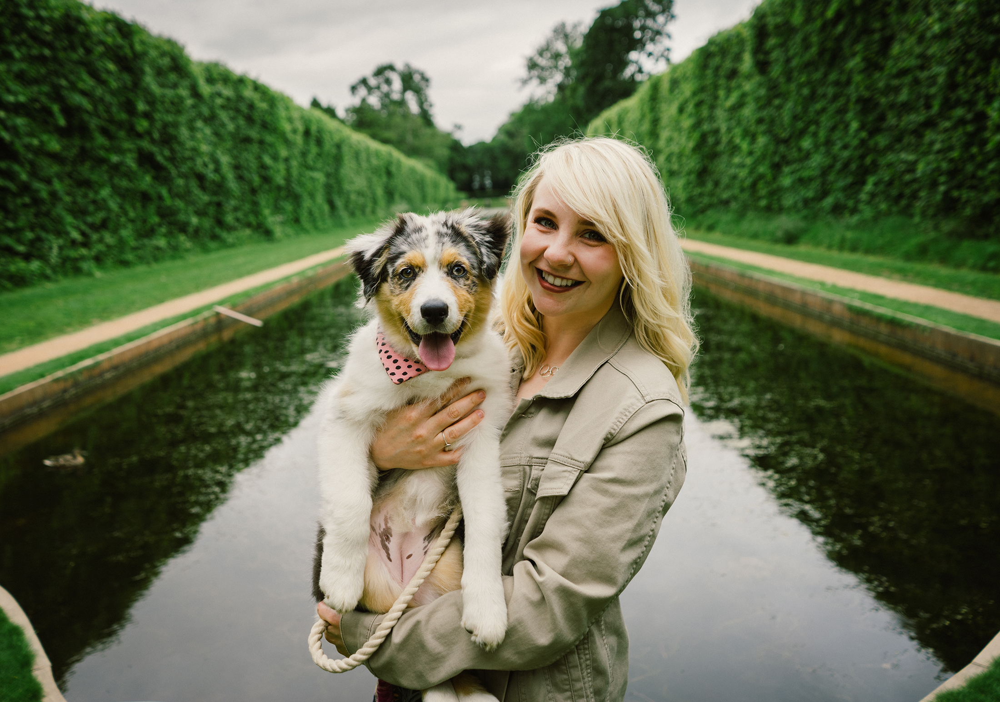

Side quest 01 · Photography
Making single frames happen again.
My photography site holds the complete stories and galleries. Field Notes is the looser companion: one photograph at a time, with its EXIF data and a few words—more like old Flickr, less like something that disappears after 24 hours.

Field Note · 001